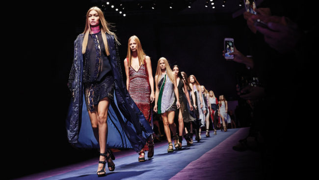

Fashion is a popular style, especially in clothing, footwear, lifestyle, accessories, makeup, hairstyle and body.[citation needed] Fashion is a distinctive and often constant trend in the style in which people present themselves. A fashion can become the prevailing style in behaviour or manifest the newest creations of designers, technologists, engineers, and design managers. Because the more technical term costume is regularly linked to the term "fashion", the use of the former has been relegated to special senses like fancy-dress or masquerade wear, while the word "fashion" often refers to clothing, including the study of clothing. Although aspects of fashion can be feminine or masculine, some trends are androgynous. High-flying trendsetters in fashion can aspire to the label haute couture. But if one disapproves of a fashion, one can attempt to dismiss it as a mere fad.Early Western travelers, traveling whether to India, Persia, Turkey or China, would frequently remark on the absence of change in fashion in those countries.The Japanese shōgun's secretary bragged (not completely accurately) to a Spanish visitor in 1609 that Japanese clothing had not changed in over a thousand years However, there is considerable evidence in Ming China of rapidly changing fashions in Chinese clothing. Changes in costume often took place at times of economic or social change, as occurred in ancient Rome and the medieval Caliphate, followed by a long period without major changes.In 8th-century Moorish Spain, the musician Ziryab introduced to Córdoba sophisticated clothing-styles based on seasonal and daily fashions from his native Baghdad, modified by his own inspiration.Similar changes in fashion occurred in the 11th century in the Middle East following the arrival of the Turks, who introduced clothing styles from Central Asia and the Far East. The beginning in Europe of continual and increasingly rapid change in clothing styles can be fairly reliably dated. Historians, including James Laver and Fernand Braudel, date the start of Western fashion in clothing to the middle of the 14th century, though they tend to rely heavily on contemporary imagery and illuminated manuscripts were not common before the fourteenth century.The most dramatic early change in fashion was a sudden drastic shortening and lenghtening of the male over-garment from calf-length to barely covering the buttocks, sometimes accompanied with stuffing in the chest to make it look bigger. This created the distinctive Western outline of a tailored top worn over leggings or trousers and one of the popular historical fashion was Often referred to as the "Plume Boom," the popularity of wearing real feathers in hats reached its peak in the early 20th century. According to The Smithsonian, women adorned their hats with feathers, wings, and even full taxidermied birds. This caused a huge decline in the bird population, and even led to the extinction of some.
